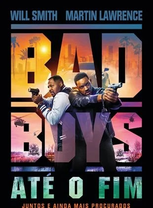
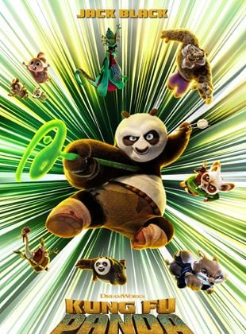
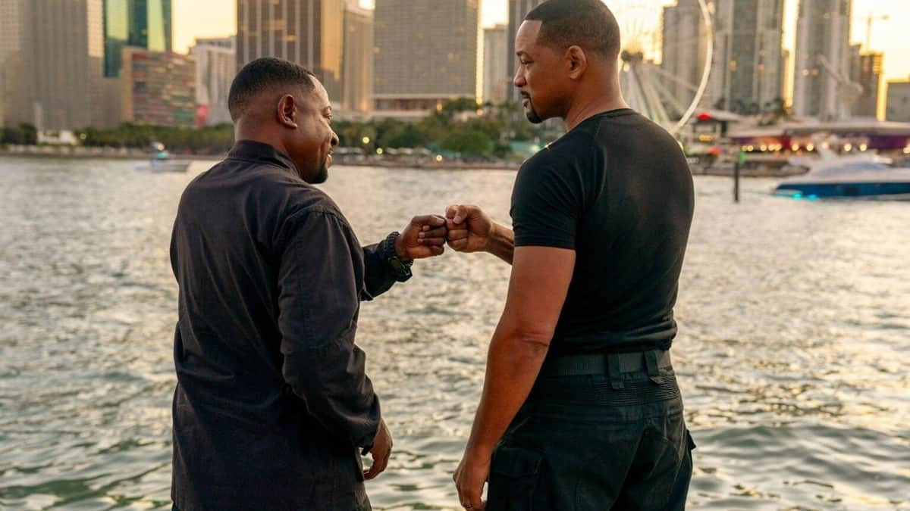
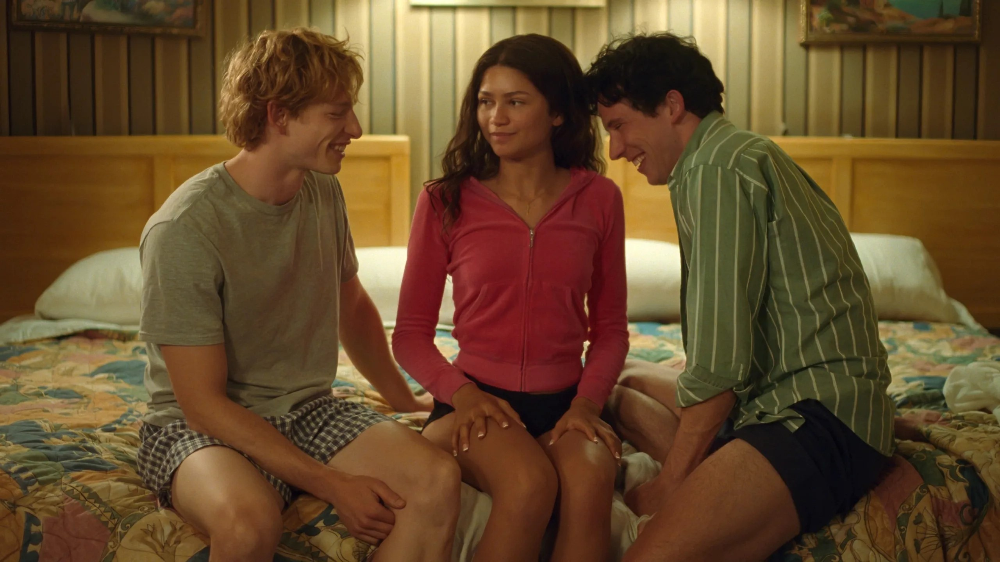
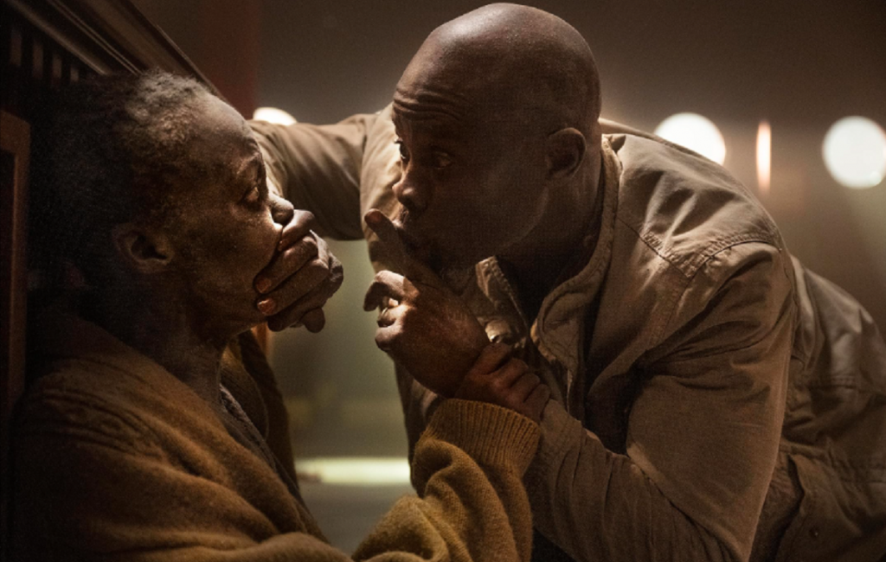

Últimas Notícias

Bad Boys 4
Ator, diretor e operador de câmera? Will Smith choca os fãs com esta cena insana de Bad Boys
16

Rivais
Em Rivais, Zendaya diz que coordenador de intimidade foi "muito útil" para cenas quentes do filme
14

Kung Fu Panda 4
Taís Araujo celebra sua personagem em Kung Fu Panda 4: "Estou pleiteando uma vilã há séculos!" (Entrevista)
L

Um Lugar Silencioso: Dia Um
O detalhe que você ignorou em Um Lugar Silencioso e que torna o filme ainda mais incrível: Faça uma pausa no minuto 3:49 para ver
14
Reviews

Bad Boys 4:
Até o Fim mostra que a franquia ainda tem fôlego
Quarto filme incorpora vulnerabilidades que reforçam o trunfo da dupla: o bromance
10

Rivais:
Seguindo a deixa do tênis para encontrar energia em falta no cinema.
L.Guadagnino mostra que é craque em “criar um clima”
9

Kung Fu Panda 4:
Kung Fu Panda 4 é melhor do que você imagina, mas não tão bom quanto você merece
7

Um lugar Silencioso: Dia Um:
A sobrevivência como uma experiência claustrofóbica
Michael Sarnoski prioriza o drama para evitar cair nas armadilhas do clichê
9